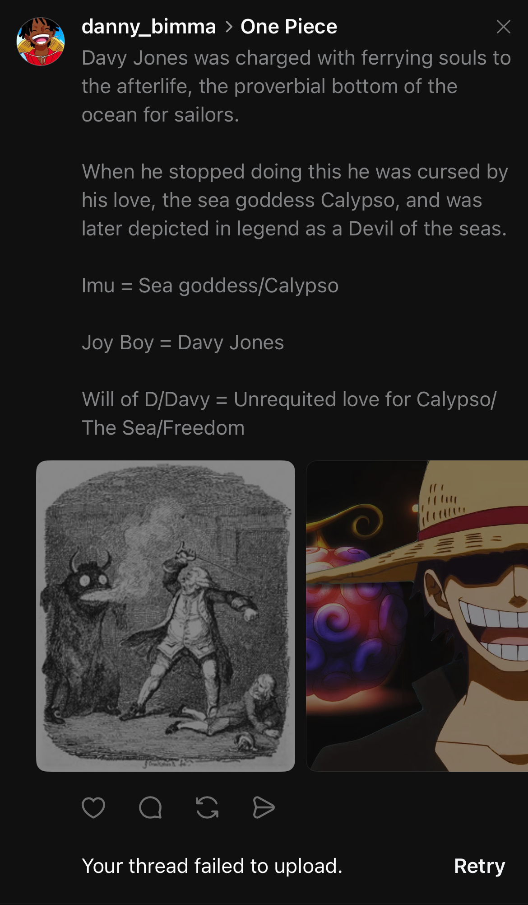

Right off the bat, the chapter answered one of the biggest questions I had about Loki—what could he have seen in Rocks to idolise him the way he did? But it made perfect sense once it was revealed that Rocks and his unstoppable, primordial crew were the first humans Loki ever met. Matter of fact, the narrator went out of their way to ensure the audience knows Rocks was NOT even a pirate, and had absolutely NO crew when he invaded Marijoa and broke into Mu's private room.
Xe Bec made it all the way to The Holy Land, and was able to land a personal threat to the one currently ruling the world… BY HIMSELF, ON A RANDOM THURSDAY AFTERNOON!!
There are very few things Eiichiro Oda loves illustrating more than the price of prejudice. The heavy cost of judging a book before even having read it. He's shown us someone who was once painted as one of the biggest antagonists in a story, can actually turn out to be one of its biggest heroes before the end of it. Or, having one character completely underestimate the strength/integrity of another, only to be humbled or shocked within an inch of their life when confronting the one they wrongly judged. Loki spent his entire life up until he met Rocks thinking that no human was worthy of his respect. That if full-grown adult giants in his own country weren't strong enough to lay a finger on him, what could puny humans hope to do… then a puny human named Rocks randomly appeared one day and beat his ass. I'm 100% against child abuse, but I AM glad Rocks gave Loki a beating, he really needed that.
Not only was Xe Bec the first human Loki ever saw in the flesh, but he was the first person who ever rivalled him in strength, and the first man he ever saw oppose his father's Kingly position. This man walked up to the ancient giant and King of Elbaph, The Great Harald, and casually asked him to serve. One of the same humans Loki once assumed to be puny little weaklings, just kicked down his front door, smacked him upside the head, and told his father to come work for him... kid Loki had no choice but to be taken aback by this man. This was definitely Rocks' chapter from start to finish; and I wouldn't be at all upset if it turned into his flashback entirely. This man commands something that goes way beyond aura. Roger, Shanks, Luffy, even fucking Imu themselves somehow look like chumps when held up before Xe Bec.
Furthermore, what does Rocks mean when he says he worships Davy Jones? And why the fuck would knowing this about Rocks cause Imu to take pause?? We've only heard mention of the Davy Jones legend once before in One Piece, and that was during the infamous Davy Back fight in Long Ring Long Land!! So, Davy Jones was definitely a real legendary character who lived in the OP universe. But just how big was his legend... big enough to warrant a Mystical Devil Fruit ability? As big a legend as Nika??
This may be a silly side-track, but I have a long-running personal theory that says: The Darkness Fruit was the SECOND DF Black Beard ate; the first was one that allows him to eat other DFs. It's AFO vs OFA all over again!! Fuck!! I knew Oda was going to end up making that old Long Ring Long Land arc one of the most integral to the entire saga!!
The end of the chapter even managed to bring the beginning full-circle for me; because Rocks was the only man who changed Loki's world view, or rather, he was the first person who ever got Loki to consider/see the world. Sure, it was in the context of dominating the damn planet, but still. Not even King Harald with his constant pilgrimages to allies around the globe, was able to show Loki the world was much bigger than he could ever imagine. When Loki saw Rocks speak, it was the first time he ever internalised the world being way bigger than the giant tree he lived on. Salvation!! For the first time, the demon child was given a reason to live!! And if he does end up joining our crew, that would make him the second demon child we have in our ranks. It's safe to say my Captain has a type, and it's all the people who are rejected by society ü•π.